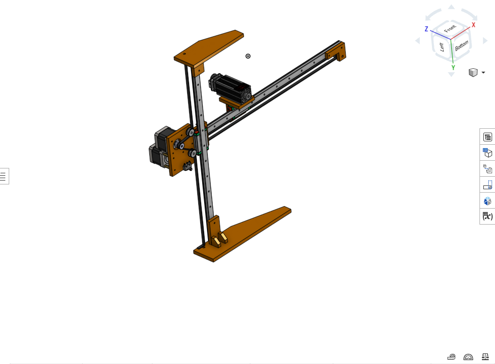
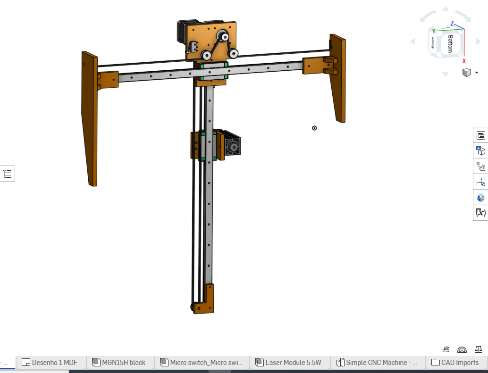
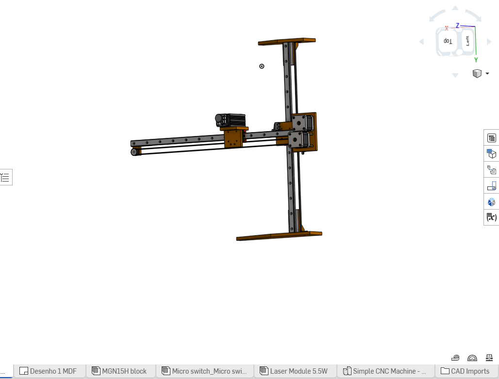
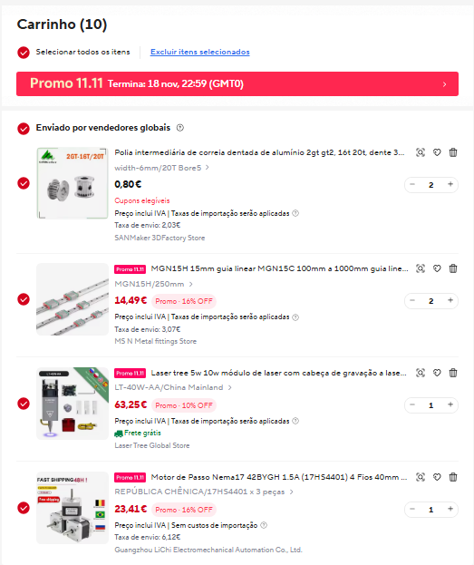
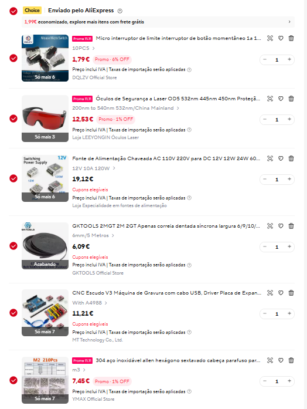

G
FIRMWARE CNC
GRBL
Firmware de controlo CNC de código aberto. Confirma a compatibilidade com a placa de controlo antes de qualquer instalação.
GRBL no GitHub ↗MANUAL DIGITAL · PROJETO PAP
Um centro de apoio para conhecer a CNC Laser, consultar os materiais previstos, encontrar software e documentação e esclarecer dúvidas sobre o projeto.

MODELO CAD PARTILHADO PARA O PROJETO · IMAGEM DE REFERÊNCIA01 / MODELO DA MÁQUINA
O desenho apresentado é uma estrutura compacta com uma configuração em pórtico e coluna vertical. As imagens abaixo são as vistas do modelo CAD que enviaste.


02 / LISTA DE MATERIAIS
Lista transcrita das capturas do carrinho que enviaste. Os títulos de marketplace podem estar abreviados; confirma a referência exata, a quantidade e a compatibilidade na página do vendedor.


| Material | Qtd. | Preço/un. | Subtotal | Observações |
|---|---|---|---|---|
| Polia intermédia GT2 2GT, 16T/20T, largura 6 mm, furo 5 mm | 2 | 0.80 € | 1.60 € | Especificação aproximada conforme título visível no carrinho; confirmar referência exata. |
| Guia linear MGN15H / MGN15C, 15 mm | 2 | 14.49 € | 28.98 € | O anúncio parece indicar comprimentos entre 100 e 1000 mm; confirmar comprimento escolhido. |
| Módulo laser Laser Tree 5 W / 10 W | 1 | 63.25 € | 63.25 € | O título apresenta 5 W/10 W e referência LT-40W-AA; confirmar modelo e potência reais antes da compra. |
| Motor passo a passo NEMA 17, 42BYGH / 17HS4401, 1,5 A | 1 | 23.41 € | 23.41 € | Confirmar comprimento do corpo, corrente e compatibilidade com o controlador. |
| Microinterruptor de fim de curso | 1 | 1.79 € | 1.79 € | O anúncio aparenta ser um conjunto de 10 unidades. |
| Óculos de proteção laser | 1 | 12.53 € | 12.53 € | O anúncio menciona OD5 e vários comprimentos de onda. Não assumir que são adequados sem validar com o fabricante e responsável de segurança. |
| Fonte de alimentação comutada 12 V / 10 A | 1 | 19.12 € | 19.12 € | Confirmar tensão, corrente, potência, polaridade e requisitos de cada componente. |
| Correia dentada GT2, passo 2 mm, largura 6 mm | 1 | 6.09 € | 6.09 € | O anúncio aparenta indicar rolo de 5 m. |
| CNC Shield V3 / placa de expansão | 1 | 11.21 € | 11.21 € | A imagem sugere conjunto com placa e drivers; confirmar o conteúdo exato e compatibilidade. |
| Parafusos Allen em aço inoxidável 304, M2 | 1 | 7.45 € | 7.45 € | O anúncio aparenta indicar conjunto de 210 peças. |
| Total indicativo das linhas apresentadas | 175.43 € | Sem eventuais portes, impostos adicionais ou alterações de preço | ||
O valor é uma soma indicativa dos preços visíveis nas imagens e das quantidades aparentes. Não confirma que o carrinho esteja completo nem que todos os artigos sejam compatíveis entre si. O módulo laser, os óculos, a fonte e a eletrónica exigem validação técnica e de segurança.
03 / DOCUMENTAÇÃO
Esta área será preenchida com dados reais à medida que a máquina for construída e testada.
Materiais previstos, quantidades, preços e referências a confirmar.
Consultar materiais ↗Documento inicial para registar características, montagem, custos e manutenção.
Descarregar PDF ↓Respostas gerais a dúvidas comuns sobre software e diagnóstico.
Abrir centro de ajuda ↗04 / SOFTWARE E RECURSOS
Usa as páginas oficiais para obter versões e documentação atualizada. A compatibilidade depende da placa e do firmware que forem efetivamente instalados.
FIRMWARE CNC
Firmware de controlo CNC de código aberto. Confirma a compatibilidade com a placa de controlo antes de qualquer instalação.
GRBL no GitHub ↗SOFTWARE LASER
Software para preparar trabalhos laser. Consulta requisitos, controladores suportados e condições da licença.
Download e versão de avaliação ↗DOCUMENTAÇÃO DO PROJETO
Modelo inicial para organizar a documentação da máquina.
Descarregar manual PDF ↓05 / CENTRO DE AJUDA
Pesquisa uma palavra-chave ou abre uma pergunta. As respostas são orientações gerais e não substituem o manual do fabricante.
Confirma o cabo e a porta utilizados e se o software reconhece o controlador. Consulta a documentação da placa. Se continuar sem ser reconhecida, pede ao orientador para verificar os controladores e a configuração. Não alteres firmware ou cablagem por tentativa e erro.
Verifica se a placa é suportada pela versão do LightBurn e consulta a documentação oficial. A compatibilidade depende da placa e do firmware instalados. Regista o modelo exato do controlador antes de procurar uma solução.
Identifica a placa de controlo e consulta a documentação do fabricante e do projeto GRBL. Não carregues firmware apenas porque o nome parece correto. Confirma tudo com o professor orientador.
Interrompe o trabalho e não forces o mecanismo. Solicita uma verificação supervisionada da estrutura, cablagem e componentes. Não desmontes nem mexas em ligações com o equipamento alimentado.
Confirma se o ficheiro está num formato aceite pela versão do programa e se foi exportado corretamente. Consulta a ajuda oficial e começa por ficheiros de teste fornecidos pelo projeto.
Suspende os testes e regista o material, o ficheiro e as condições em que ocorreu o problema. A verificação do módulo e da ótica deve ser feita por pessoa qualificada, seguindo as instruções do fabricante.
Segue o plano do fabricante e o procedimento definido pelo orientador. Regista inspeções, anomalias e substituições. Qualquer intervenção deve ser feita com o equipamento em condição segura e por pessoa competente.
Um laser pode causar lesões oculares e cutâneas e provocar incêndios. A máquina só deve ser utilizada com proteção adequada, resguardos e supervisão qualificada. Nunca contornes sistemas de segurança nem operes o laser com a máquina aberta ou sem autorização.
Não foram encontradas perguntas com esse termo. Experimenta outra palavra.
06 / SEGURANÇA
Este site não é uma autorização para construir, ligar, configurar ou operar uma máquina laser. A avaliação de risco, a escolha de proteção ocular adequada ao comprimento de onda e à potência, os resguardos e a prevenção de incêndio devem ser validados por professor ou técnico qualificado. Nunca olhes diretamente para o feixe nem desatives proteções. Os óculos mostrados no carrinho ainda não estão validados como adequados para o módulo escolhido.